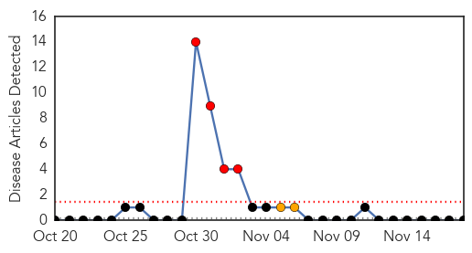
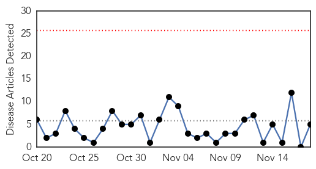
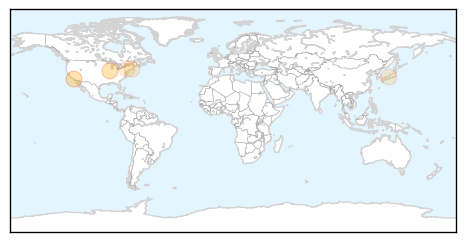
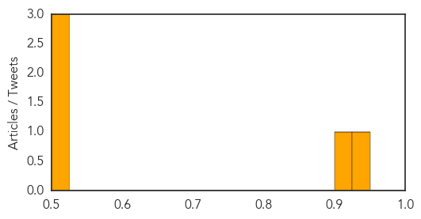

Bubonic Plague
30-Day Web Trend
4 alerts, 2 warnings

30-Day Twitter Trend
1 alerts, 0 warnings

Article Locations

Article Confidences

Top Articles:
-
No articles found for Nov 18, 2015
Top Tweets:
-
No tweets found for Nov 18, 2015
Hepatitis
30-Day Web Trend
0 alerts, 0 warnings

30-Day Twitter Trend
1 alerts, 0 warnings

Article Locations
Article Confidences
Top Articles:
- 0.948
- UC Irvine researchers developing one-step test for hepatitis C
- 0.902
- Guide Your Teens Because these Sexually Transmitted Diseases Are on the Rise
- 0.517
- All things gastro – an update from BMC Medicine at UEG Week 2015
- 0.503
- McDonald’s Class Action Lawsuit Filed After Over 1000 Exposed to Hepatitis A
- 0.501
- CDC Says Sexually Transmitted Diseases Are At a Record High in the U.S.
Top Tweets:
-
No tweets found for Nov 18, 2015